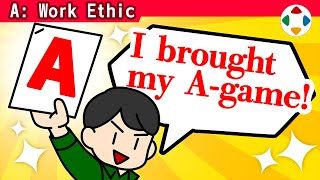
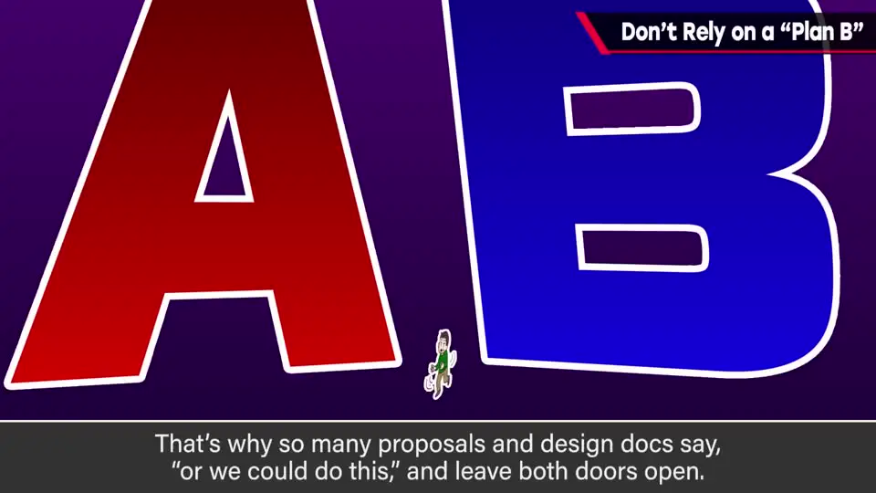
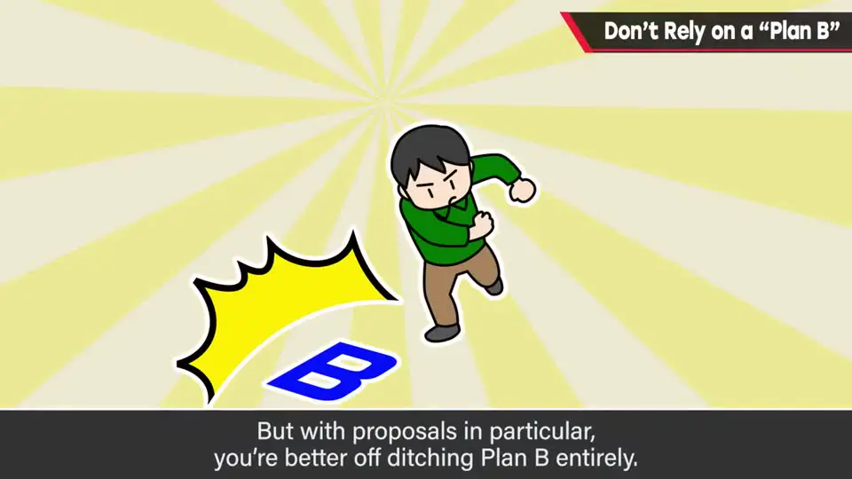
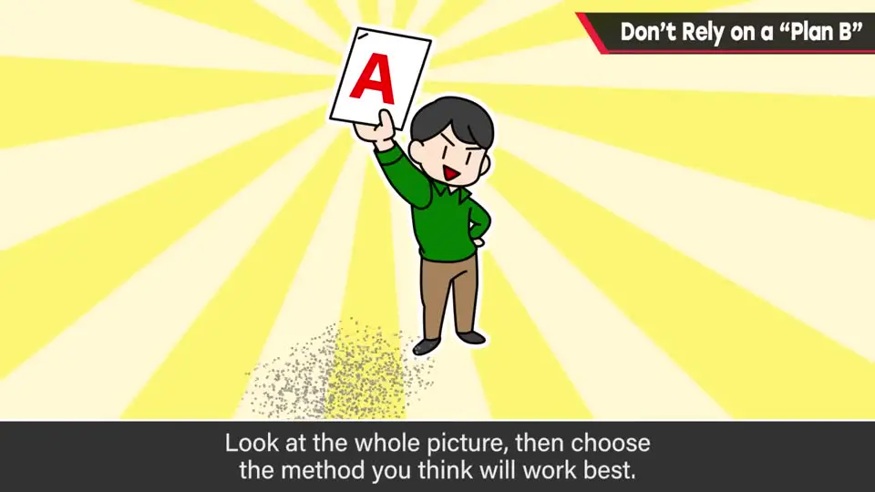
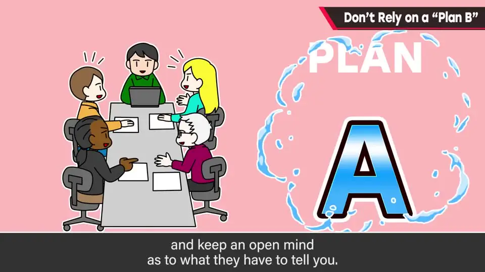
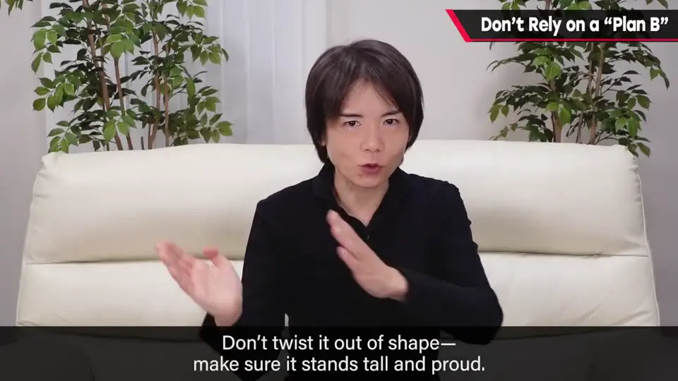

速览
写企划书时，常有人把「A 方案也行、B 方案也行」两种做法都写上，把决定权交给别人。樱井认为：企划书里不要写 Plan B。综合考虑后选出自己认为最好的一个方案，坚持把它写清楚；之后再根据团队的提议、为了性价比做轨道修正即可。企划是游戏的骨架，要有一条贯穿始终的主线。
1. 想把选择「交给别人」的诱惑 0:04
写企划书或规格书时，会犹豫怎样的规格更有效率：
- 两个候选里，哪个对程序实现更方便？
- 哪个会让更多人觉得更有趣？
于是就想把两个都提出来，让别人去选。所以企划书、规格书里常见「也可以用××的办法」这种两案并列的写法。

2. 尤其是企划书：别写 Plan B 0:34

- 不要「也可以这样」式地把方案出两遍。
- 综合来看，选出你自己认为最好的方法就行。
- 其他提议之后再接受也不迟。
「A 也行，B 也行」——心情可以理解，但企划书不能这样写。
正确姿势：一定存在一个理想的规格；在此基础上，为追求费用对效果（性价比）做一些轨道修正——这种程度就足够了。

3. 坚持 Plan A，同时倾听团队 1:10

要做到这一点，需要团队内部提出更多建议，企划者也要听得进去。
- 企划者写出自己认为理想的规格；
- 出现问题，由团队一起研究解决方案；
- 结果也许会回到原本想到的「B 案」，但企划者从一开始就负起责任、想透后给出一个方案，并一直这样做，才是重要的。
- 这也有助于积累经验。
flowchart LR
A["企划者综合考虑
想透后写出唯一的理想方案（Plan A）"] --> B["团队提出建议
企划者认真倾听"] B --> C{"出现问题？"} C -->|"是"| D["团队一起研究解决方案
（也可能回到原 B 案）"] C -->|"否"| E["按 Plan A 推进"] D --> F["为性价比做轨道修正"] E --> F
想透后写出唯一的理想方案（Plan A）"] --> B["团队提出建议
企划者认真倾听"] B --> C{"出现问题？"} C -->|"是"| D["团队一起研究解决方案
（也可能回到原 B 案）"] C -->|"否"| E["按 Plan A 推进"] D --> F["为性价比做轨道修正"] E --> F
4. 企划是骨架，别让它东倒西歪 1:41
此外，总监（Director）往往也被要求具备程序思维、考虑开发效率。
但企划是骨架、是顶梁柱。不要让它左弯右拐，要让它笔直、有一条贯穿的主线。

自测题
1. 樱井为什么反对在企划书里写「A 也行、B 也行」？他建议怎么做？
那是把决定交给别人。应该综合考虑后选出自己认为最好的一个方法写进去，其他提议之后再接受。 0:40
2. 写了「理想规格」之后，如何应对成本或实现上的问题？
以理想规格为基础，为了性价比做轨道修正；出现问题时由团队一起研究解决方案，企划者要倾听团队的提议。 1:01
3. 如果最后还是回到了 B 案，那坚持 Plan A 还有什么意义？
重要的是企划者从一开始就负起责任、想透后给出一个方案，并一直这样做；这也有助于积累经验。 1:27